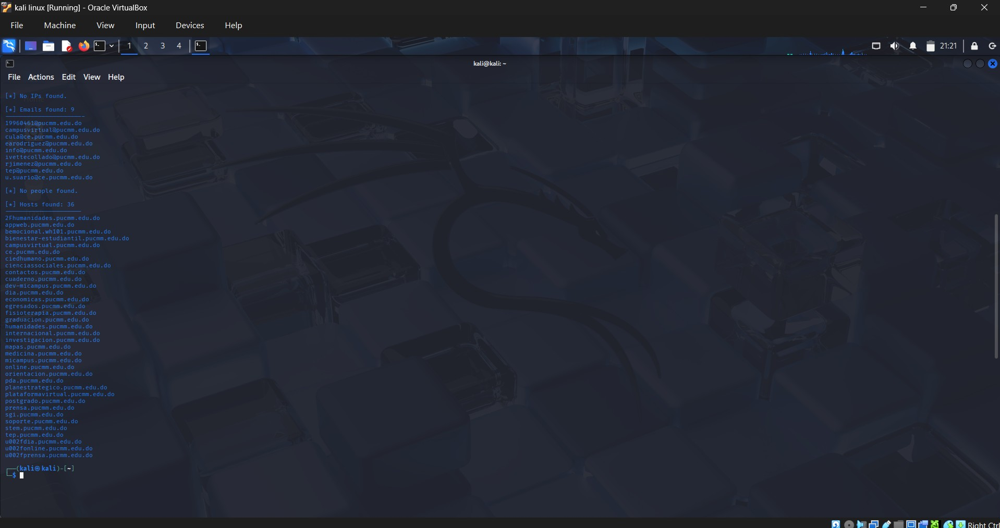
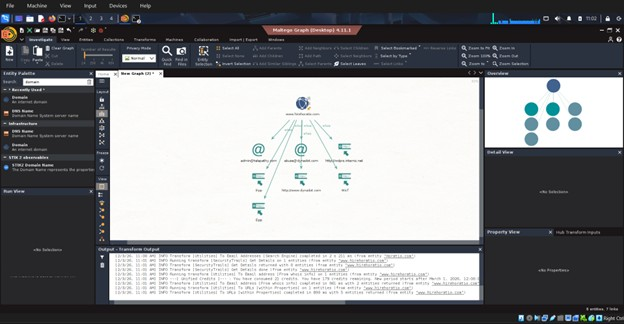
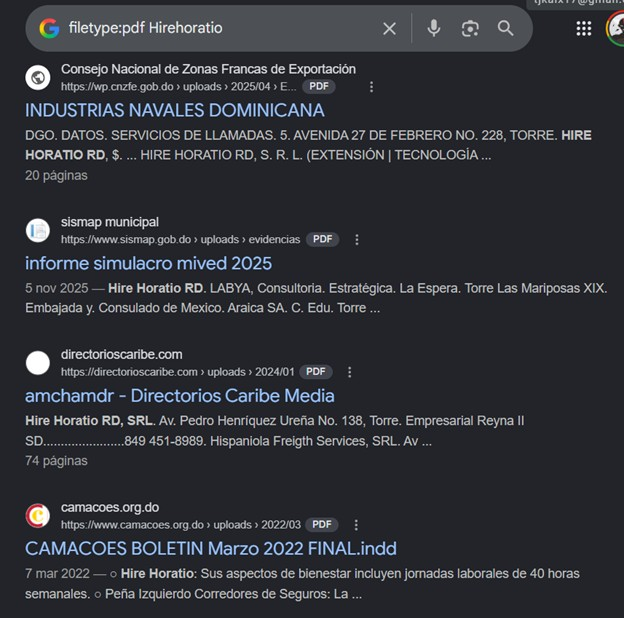
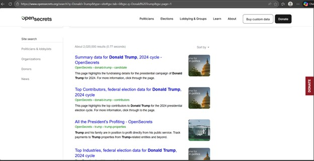
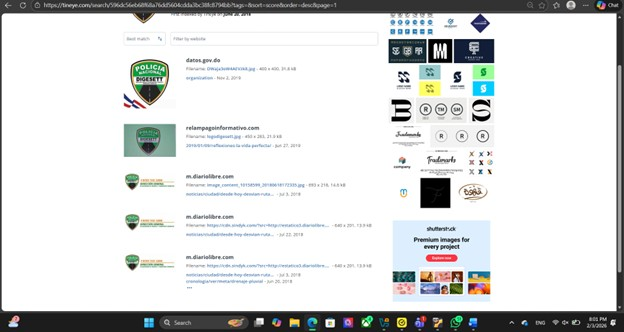
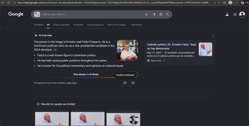
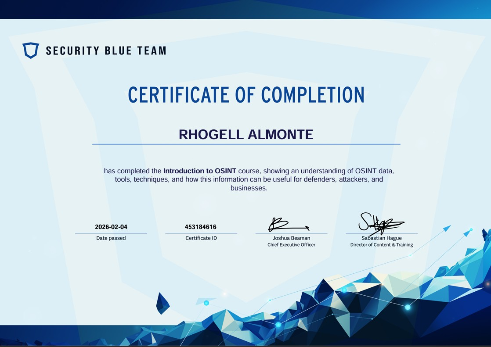

📁 Portafolio de Proyectos
Proyecto 1: Examen HTML
Esta es una breve descripción de mi asignación "examen.html". En este proyecto apliqué conceptos de estructura y semántica de HTML.

Proyecto 2: Olimpiadas HTML
Aquí muestro mi trabajo en la asignación "Olimpiadas.html". Fue un ejercicio práctico para utilizar diferentes etiquetas y estilos básicos.

Proyecto 3: Red en Cisco Packet Tracer
Aquí muestro mi trabajo con una práctica en la cual configuramos una red completa con servidor DNS y DHCP en Packet Tracer.

Proyecto 4: Investigación OSINT con Herramientas de Código Abierto
En este proyecto se aplicaron diferentes técnicas de OSINT (Open Source Intelligence) para la recolección y análisis de información pública utilizando múltiples herramientas especializadas.
🔹 TheHarvester
Se utilizo la herramienta "TheHarvester" Para ver informacion relacionada a algun dominio utilizando ciertos motores de busqueda. En este caso utilize DuckDuckGo, Bing y Yahoo.
🔹 Maltego
Se utilizó Maltego para identificar subdominios y correos asociados a la empresa Horatio. No se encontró información crítica, pero sí datos sobre empresas partners relacionadas.
🔹 Google Dorking
Mediante Google Dorks se identificaron documentos públicos relacionados con la empresa, principalmente información legal donde figura como zona franca.
🔹 OSINT Framework – OpenSecrets
Se utilizó OpenSecrets para analizar información política pública de Donald Trump, incluyendo datos financieros y de campañas políticas.
🔹 TinEye
Se realizó una búsqueda inversa de imágenes utilizando el logo de la DIGESETT, obteniendo artículos e información relacionada con la entidad.
🔹 Google Image Search
Se utilizó Google Image Search para analizar una imagen del Dr. Ernesto Fadul, obteniendo información sobre su trayectoria política y apariciones públicas.
📜 Certificación en OSINT
Certificación obtenida tras completar un curso de OSINT, donde se desarrollaron habilidades de investigación, análisis y recolección de información utilizando fuentes abiertas.
